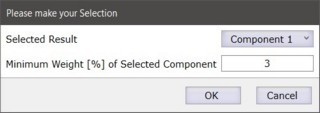

所有标记颗粒的光谱在TrueMatch中用于搜索化学组分。
最佳组分搜索结果名称作为材料名称和HQI（命中质量指标）分配给颗粒。
此信息可用于：
- 在颗粒管理器中排序、过滤和选择颗粒
- 决定是否应重新测量某些颗粒的光谱，例如使用不同的测量参数
- 创建带有统计信息的报告
参见 TrueMatch搜索概述。
操作
 使用结果
使用结果
这将把最佳搜索结果作为材料名称分配给颗粒：
- 如果未设置结果标记，则使用HQI最佳的结果
- 如果设置了结果标记，则使用被标记结果中HQI最佳的
如果光谱没有搜索结果，用户可以决定不分配材料或分配名为"Unknown"（未知）的材料。
结果选择

如果进行了多组分搜索，您可以定义应使用哪个子结果（组分1、2、3）。
您还可以为所选组分定义最低权重百分比，以避免使用重要性很低的结果。